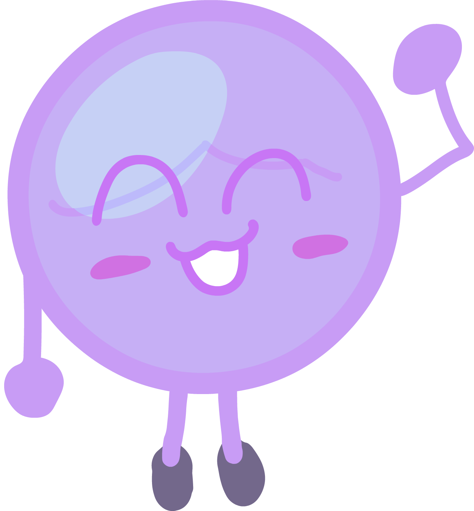

Cee

Hello!
Welcome to Cee the Bubble's page. Cee likes to draw and make music!
On this page, you'll find fun facts about Cee and some of his friends.
He also has a YouTube channel.
Info
| Attribute | Value |
|---|---|
| Full Name | Cee Soapie Bubbles |
| Birthday | May 6th |
| Pronouns | He/They |
| Occupation | Student |
| REAL and more AWESOME occupation | Drawing, Music and Coding! |
| Species | Bubble |
About
Cee likes to make music, code, and create art and animations sometimes!
He doesn't focus too much on his grades, but can you
blame him? Doing YouTube and animations is
OBVIOUSLY way better, and if you disagree
then you are a very awesome person.
Cee had the chance to become rich and have $3,479,347.54 if he hadn't chosen to perform in a band concert, but we don't talk about that!
Cee the Bubble is voiced by Cee the Bubble. Who would've guessed?
Cee also has two brothers, Gee the Bubble and Mr. Bubbles.
FAQ
What's your favorite animal?
Dogs! I have a dog called Marshmallow, and his breed is Bichon Frisé.
Fun Facts
- Cee has been animating for more than 5 years.
- His favorite food is Sushi.